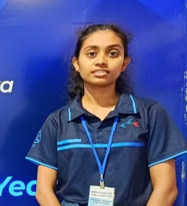

Vibration-Based Mechanosensor
with Accelerometer Tip
In this project, a vibration-based artificial robotic antenna (feeler) — inspired by insect antennae — is constructed using an accelerometer mounted on the tip of a plastic tube. This antenna is used for detecting contacts with surrounding objects.
The antenna is mounted on a Pan-Tilt unit, which is then attached to a mobile robot platform. The key challenge with this type of mechanosensor is self-sensing due to ego-motion — vibrations caused by the robot's own movement interfere with contact detection. This project aims to cancel the effects of ego-motion using a bio-inspired algorithm.
Activities planned for the full semester with week-by-week breakdown.
Study existing research on mechanosensors, robotic antennae, ego-motion cancellation, and bio-inspired sensing algorithms.
Identify and procure hardware: accelerometer, plastic tube, Pan-Tilt unit, mobile platform, and supporting electronics.
Design the PCB schematics, circuit diagrams, and hardware layout for the antenna sensing system.
Develop the initial coding framework and bio-inspired algorithm for ego-motion cancellation.
Assemble the Mechanosensor prototype — mount accelerometer on tip of antenna tube and integrate with Pan-Tilt unit on mobile robot.
Calibrate the sensor system, measure sensitivity, and validate the hardware response under controlled conditions.
Collect data sets, perform offline analysis, and train the ego-motion cancellation model using bio-inspired algorithm.
Final testing, performance evaluation, results analysis, and refinement of the complete system.
Numbered deliverables with expected submission timeline.
Comprehensive review of existing work on mechanosensors, robotic antennae, and ego-motion cancellation techniques.
Week 3Detailed list of all hardware components required, with sources, specifications, and procurement status.
Complete PCB design files including schematics, layout, and fabrication-ready documents for the sensor circuit.
Week 6Core software framework implementing the bio-inspired algorithm structure for ego-motion cancellation.
Sensor Check — Done
MPU6050 accelerometer connected to Arduino Uno via breadboard and tested using I²C interface. Sensor readings verified successfully.
Platform Check
Nexus 4WD Omni-Directional robot platform tested using the manufacturer's PID motor control code.
View CodeFully assembled and functional robotic antenna prototype with accelerometer, mounted on Pan-Tilt unit and mobile robot.
Week 10Detailed analysis of sensor calibration results, sensitivity measurements, and hardware validation outcomes.
Week 11Final comprehensive report on offline data testing, model training results, and ego-motion cancellation performance evaluation.
Week 14Live progress log — updated each week throughout the 14-week project.
Met with supervisors, defined project scope, created the 14-week timeline and plan, and studied 3 key research papers directly related to this project.
CompletedSourced and studied 3 additional papers on bio-inspired tactile sensing, CPG motor control, and robotic contour tracing. Key facts marked up for algorithm design.
CompletedUsed the recorded robot platform dimensions to design mounting brackets for the servo motors, Jetson Nano, and wheel base.
CompletedCollected remaining components, drew the sensor interface circuit diagram, tested the MPU6050 accelerometer, and inspected the robot platform's mounting points.
CompletedBuilt the basic program structure to synchronize the robot's movement commands with accelerometer data.
Completed
Jayasundara J.P. — E/21/199Dr. W.A.N.I. Harischandra
Dr. B.G.L.T. Samaranayake
University of Peradeniya — Faculty of Engineering
e21199@eng.pdn.ac.lk
Supervisor
Dept. of Electrical & Electronic Eng.
University of Peradeniya
Co-Supervisor
Dept. of Electrical & Electronic Eng.
University of Peradeniya